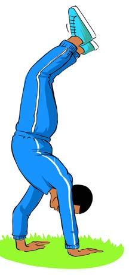
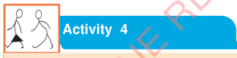

Figure 6: A pupil walking by hands
5.
Start walking with hands forward, backward, right and left; and
6.
You can make majestic moves while walking.

Practise standing and walking with hands without the support of a partner or a wall.
Tower building
Here as a player, you have to work together with your fellows to create different shapes using your bodies.
These shapes are:
1.
Get up or get lifted with hands, as shown in Figure 8;